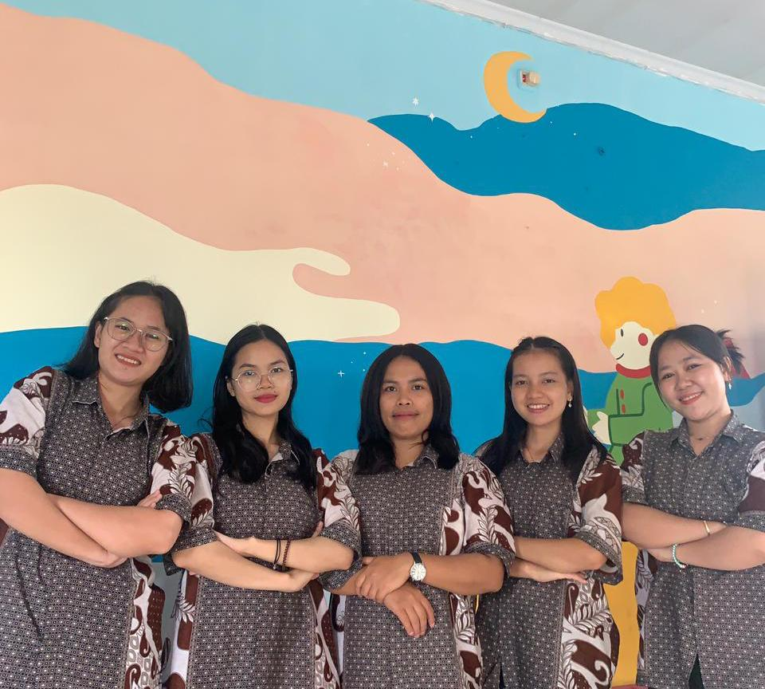
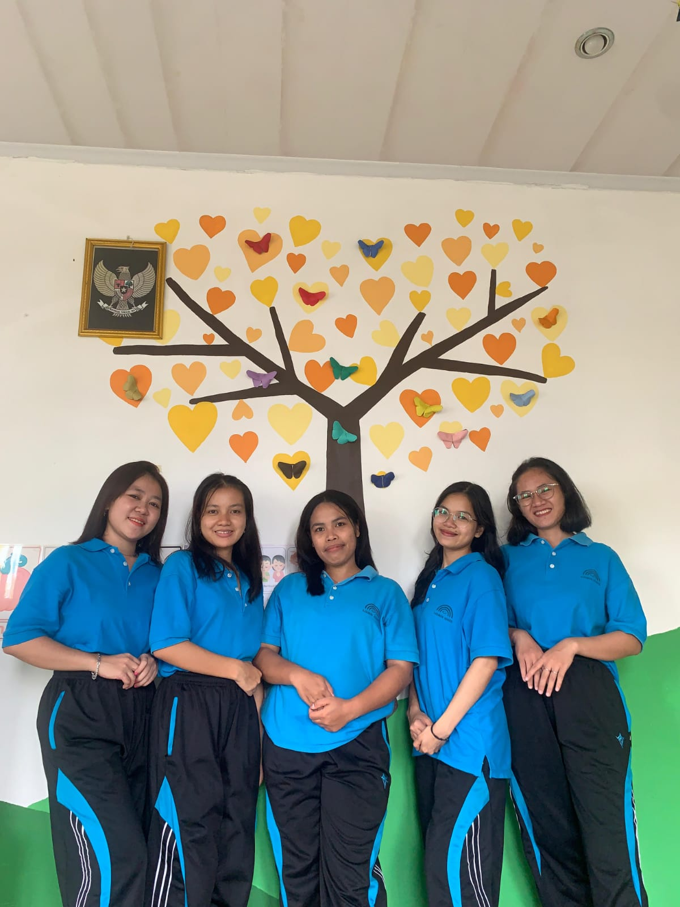
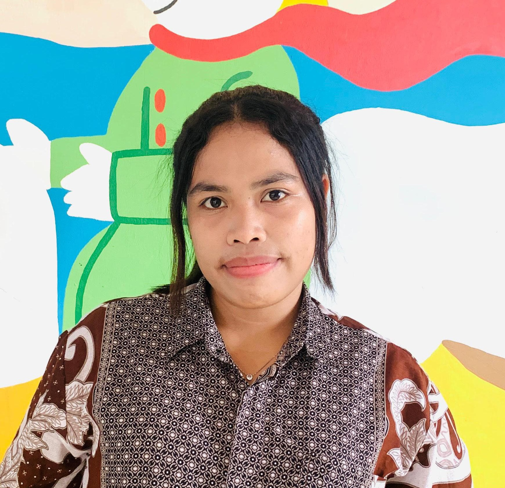
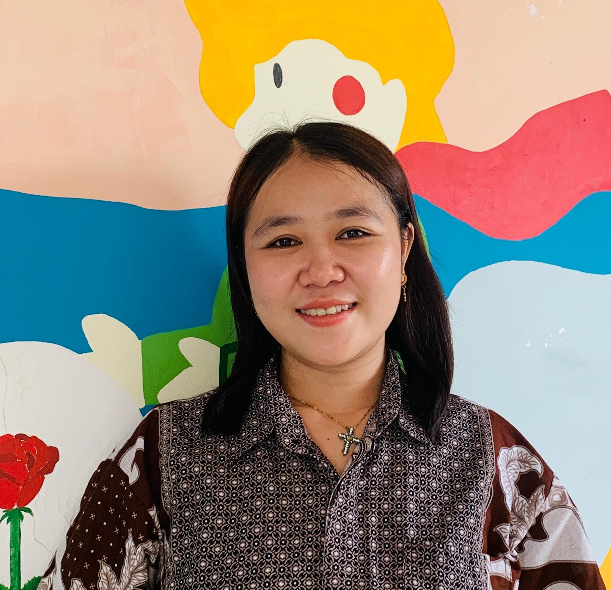
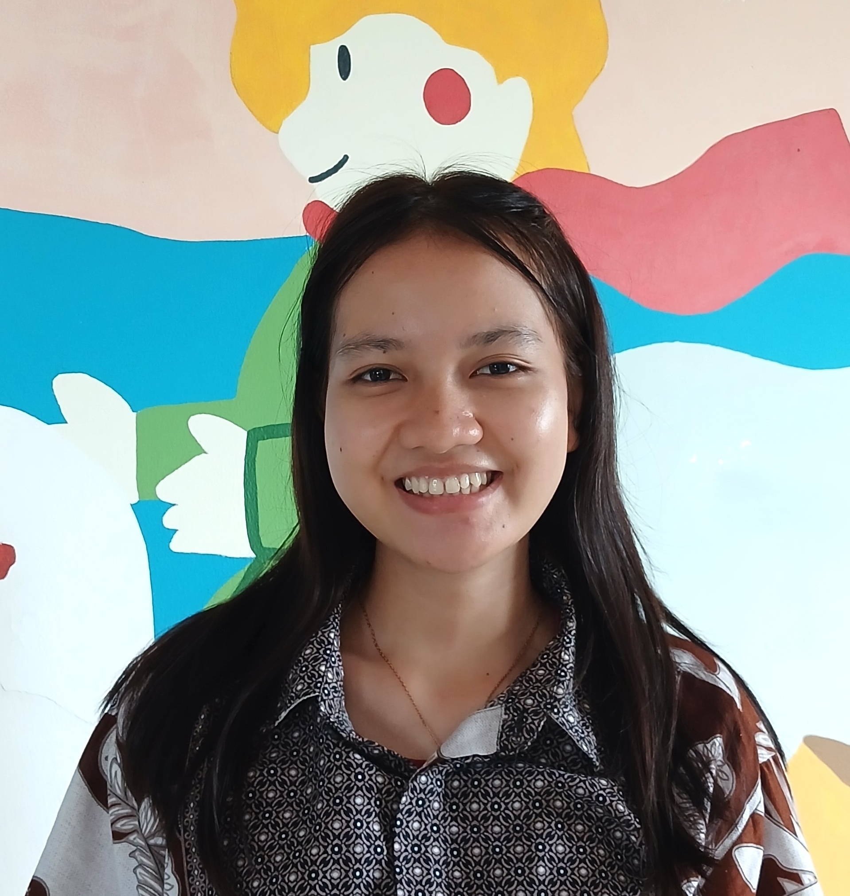
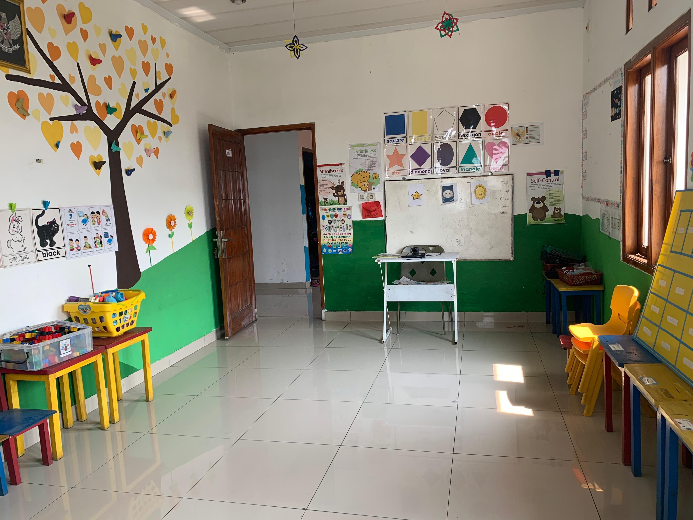
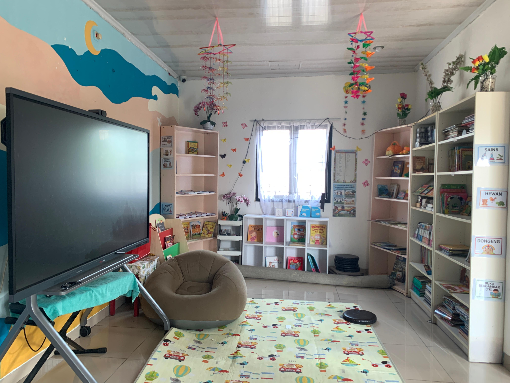
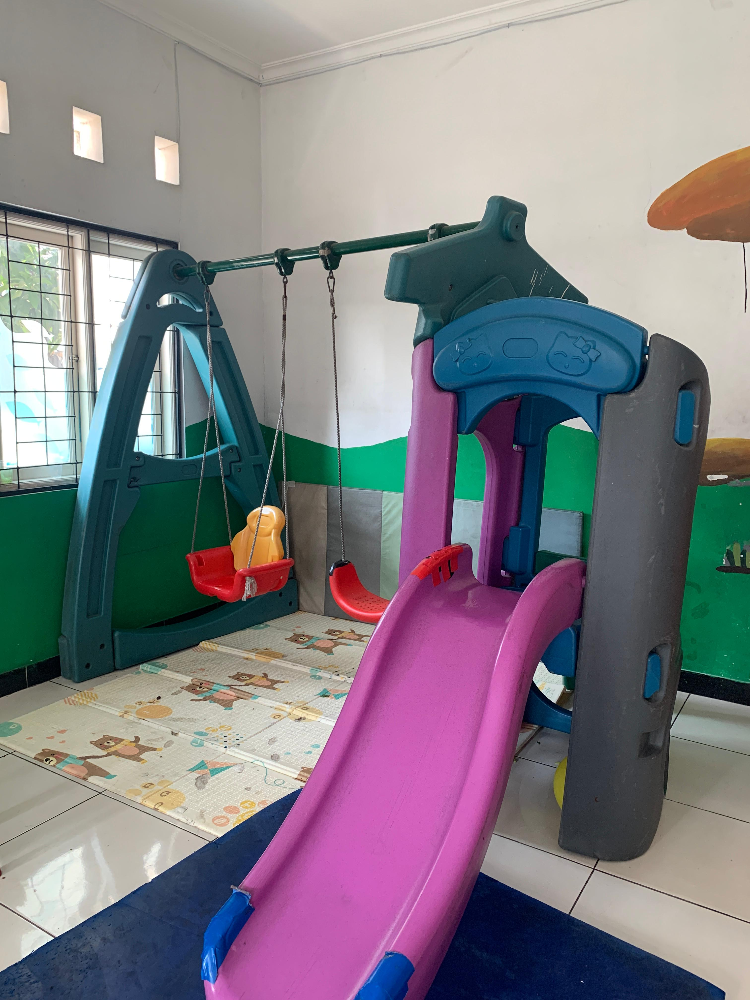

Menjadi pondasi awal melalui pendidikan holistik untuk membesarkan murid muda Kristus yang mengasihi Tuhan serta sesama, agar mereka tumbuh dalam pengenalan akan Tuhan, memiliki karakter mulia, dan kesiapan belajar yang unggul.



Kepala Sekolah
S1 Teologi, S2 Pendidikan Agama Kristen
Melayani sejak tahun 2020

Guru Kelas Playgroup
S1 Pendidikan Agama Kristen
Melayani sejak tahun 2023

Guru Kelas TK B
S1 Pendidikan Agama Kristen
Melayani sejak tahun 2025
Guru Kelas TK A
S1 Pendidikan Agama Kristen
Melayani sejak tahun 2026
Guru Pendamping
Mahasiswa Praktek Program S1
Melayani sejak tahun 2026



Silakan hubungi kami untuk pendaftaran siswa baru atau dukungan pelayanan.